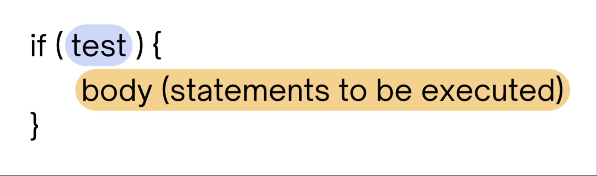
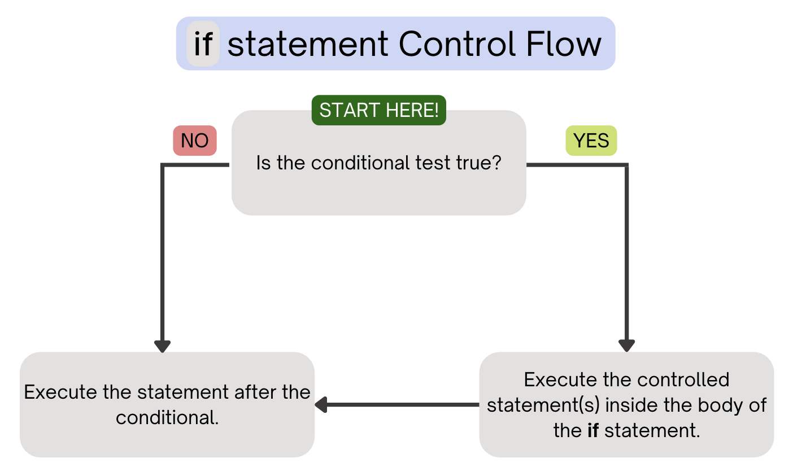
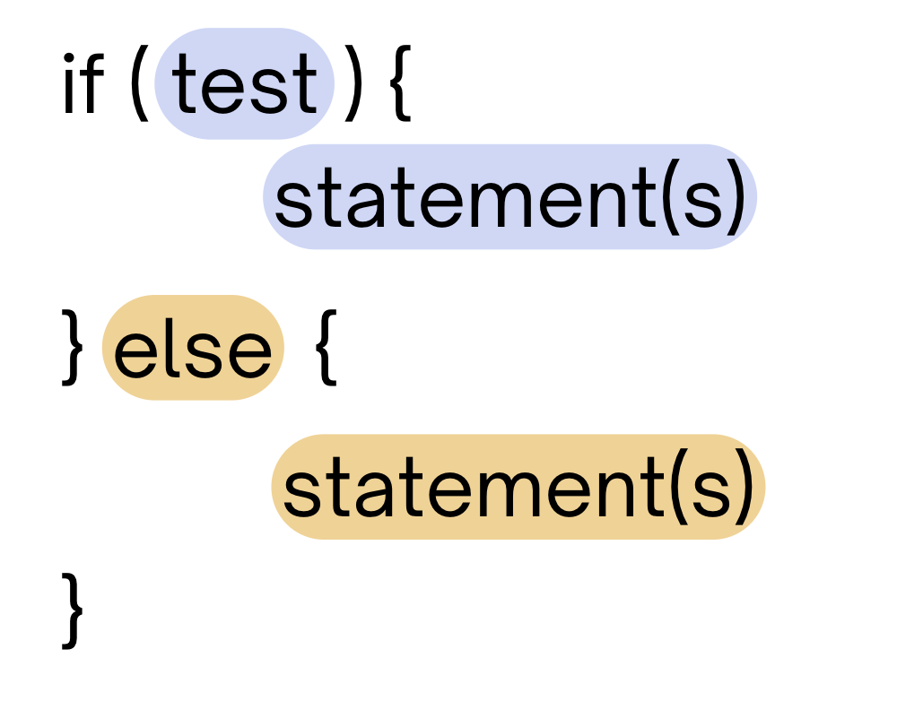
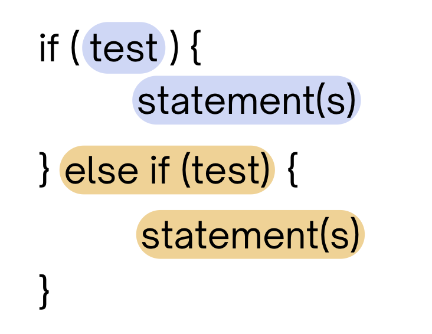
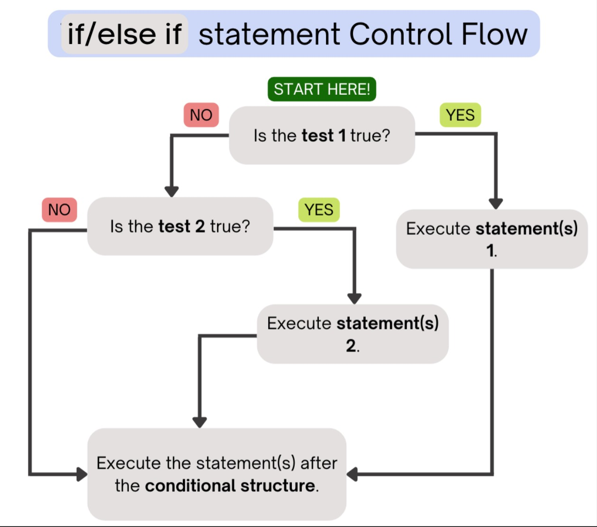

Conditionals#
Note
Above, you’ll see there’s a video titled CSE 121: Conditionals Video Walkthrough. The video and the reading both have the same information! You’re not required to go through both the video and the reading, as the video just walks through the reading to help contextualize it!
🧠 Motivation#
Say that I wanted to write a method that would take in an integer and print whether that number was positive or negative to the console.
If the parameter of the method was 4, then I would want to print 4 is positive! or if the parameter of the method was -200, the I would want to print -200 is negative!.
public class Example {
public static void main(String[] args) {
determinePosOrNeg(4); // should tell us "4 is positive!"
determinePosOrNeg(-200); // should tell us "-200 is negative!"
int num2 = -200;
}
public static void determinePosOrNeg(int num) {
// if the number is positive, i want to print it's positive
// if its negative, i want to print it's negative
}
}
Notice that I want to output one message if the parameter is positive and I want to output a different message if the parameter is negative.
Take a moment and pause and think about how we would implement the method above 🤔. When you’re ready, click “Expand” below!
Expand
We actually don't have a way to implement the behavior of the method below with only the concepts we've learned about so far. This is where **conditionals** will come in handy!💭 if statement#
The if statement is the building block of conditionals! It allows us to execute a certain body of statements if a test passes. If the test fails, then we execute whatever statements come after the conditional.
The if statement contains the following syntax:

The test – this is what enables us to determine in what cases we execute the body and in what cases we don’t.
As mentioned previously, we want to write the test in such a way (using operators, which we will mention in the next section of the reading) that we relate some values and determine if the relationship is true or false.
After the closing parenthesis of the test, we have the opening curly brace of the conditional.
The body (statements to be executed) – if the test passes (evaluates to
true), then the body of statements in between the curly braces will be executed in the order they are written.
After they are all executed, we will continue to execute the code that comes after the conditional (after the closing curly brace).
If the test fails (evaluates to false), we will not execute the body. Rather, we will just execute the lines of code that come after the conditional. After the body of the conditional, the next line will contain the closing curly brace of the conditional.
The control flow for an if statement can be found below:

Recall the relational and logical operators that we can use to produce boolean expressions - we can use these within the tests of conditional statements!
public class Example {
public static void main(String[] args) {
int num1 = 6;
int num2 = 13;
if (num1 > 0 && num2 > 0) {
System.out.println("both numbers are positive");
}
num2 = -13;
if (num1 > 0 || num2 > 0) {
System.out.println("at least one of the numbers is positive!");
}
if (!(num2 > 0)) {
System.out.println("the second number is negative!");
}
}
}
💭 if/else statement#
Building off the if statement, we have the if/else statement! This is a conditional structure that ends with an else branch, which allows us to execute a certain body of statements if a test evaluates true. If the test evaluates to false, then we execute the statements of the else branch.
The if/else statement contains the following syntax:

The
ifbranch – just like with a regularifstatement, if the test in theifbranch evaluatestrue, then we will execute theifbranch (i.e. the statements in between the curly braces of theif). Once those statements are executed in the order they’re written, we will execute the lines of code that come after the entire conditional structure, meaning we do not execute the statements in theelsebranch.The
elsebranch – if the test in theifbranch evaluates tofalse, then we will enter theelsebranch and execute the statements in that branch. Once those statements are executed in the order they’re written, we will execute the lines of code that come after the entire conditional structure.
With an if/else structure, we will enter exactly one branch. We will either execute the statements in the if branch OR the else branch, never both.
Try running the code below to see how these if/else structures interact!
Note
Try changing the values of city and num to see how the output changes!
public class Example {
public static void main(String[] args) {
String city = "Seattle";
int num = -5;
if (city.equals("Manila")) {
System.out.println("Mabuhay!");
} else {
System.out.println("Hello!");
}
if (num < 0) {
System.out.println("This number is less than 0");
} else {
System.out.println("This number is greater than 0");
}
}
}
The control flow for an if/else statement can be found below:
💭 if/else if statement#
Lastly, we have the if/else if structure! This structure allows us to not only execute different bodies of statements depending on a test, but also allows us to evaluate multiple tests! How would we use such a structure in a real-life scenario?
Say that I was writing a method that would print one message if Person 1 won the race and would print a different message if Person 2 won the race. If there was a tie, I wouldn’t want to print anything at all! In this case, we would only want to execute some code in two specific situations!
The if/else if statement contains the following syntax:

The
ifbranch – just like with a regularifstatement, if the test in theifbranch evaluates to true, then we will execute theifbranch. Once those statements are executed in the order they’re written, we will execute the lines of code that come after the entire conditional structure, meaning we do not execute the statements in theelse ifbranch.The
else ifbranch – if the test in theifbranch evaluates tofalse, then we will evaluate the test in theelse ifbranch.
If that test evaluates true, then we will execute the statements in the else if branch. If that test evaluates to false, then we will execute the lines of code that come after the entire conditional structure, meaning we do not execute the statements in the else if branch.
With an if/else if structure, it’s possible that we enter one branch or none of the branches. If it is the case that both of the tests evaluate false, then we will not execute any of the branches in the structure.
Try running the code below to see how these if/else structures interact!
Note
Try changing the values of rank and coffeeOrder and see how the output changes! Are there some values for each where we don’t print any output at all?
public class Example {
public static void main(String[] args) {
int rank = 4;
String coffeeOrder = "mocha";
if (rank == 1) {
System.out.println("WOOHOO! Gold medal!");
} else if (rank == 2) {
System.out.println("SILVER MEDAL! YAY!");
} else if (rank == 3) {
System.out.println("Bronze medal! Let's GO!");
}
if (coffeeOrder.equals("cold brew")) {
System.out.println("pouring a cold brew!");
} else if (coffeeOrder.equals("mocha")) {
System.out.println("whipping up a mocha!");
}
}
}
The control flow for an if/else if statement can be found below:

If test 1 is true, then we execute statement(s) 1 and execute the statement(s) after the conditional structure. If test 1 is false, then we check if test 2 is true. If test 2 is true, we execute statement(s) 2 and execute the statement(s) after the conditional structure. If test 2 is false, we just execute the statement(s) after the conditional structure.
🔎 Writing Multiple Branches#
When we write conditional structures, we’re not limited to just having two branches! With the introduction of the else if branch, we are able to check as many tests as we’d like (meaning we can add as many branches as needed). Note that with a conditional structure with multiple branches, we end with either an else if branch or an else branch. (We’ll come back to this idea in our next reading!)
Check out an example of a conditional structure with multiple branches below:
public class Example {
public static void main(String[] args) {
String dayOfWeek = "Wednesday";
if (dayOfWeek.equals("Monday")) {
System.out.println("Beginning of the week! :)");
} else if (dayOfWeek.equals("Wednesday")) {
System.out.println("Hump day! XD");
} else if (dayOfWeek.equals("Saturday") || dayOfWeek.equals("Sunday")) {
System.out.println("The weekend! WOOHOO!");
} else if (dayOfWeek.equals("Friday")) {
System.out.println("Almost the weekend :D");
} else {
System.out.println("How many days until Friday? -_-");
}
}
}
Note
Try changing dayOfWeek to some other day of the week to see how the output changes!
Main Points:#
Conditionals allow us to execute some sequence of code if a condition is true, and to skip over that code otherwise.
Conditionals give us control over our program so that some code only executes when we want it to.
We learned about three different types of conditional branches
if statement: If the statement within the parenthesis is true (e.g.if (x > 5)), then the code that is within theifbranch will execute.if/else statement: If the statement within the parenthesis is true (e.g.if (x > 5)), then the code that is within theifbranch will execute, otherwise the code that is within theelsebranch will execute (code must execute within either theiforelsebranch and the program will not skip over this code).if/else if statement: If the statement within the firstifstatement is false, the program will move on to eachelse ifbranches that all contain different expressions (e.g.if (x > 5) {} else if (x > 2) {} else if (x > 0){}) until it finds a branch that evaluates to true.With
if/else if statements, there is no requirement for any branch to evaluate to true, so there is no branch that must execute (unless theif/else if statementsend with anelsebranch, in which case the code within theelsebranch will execute).
We can combine many different conditional branches throughout our code!